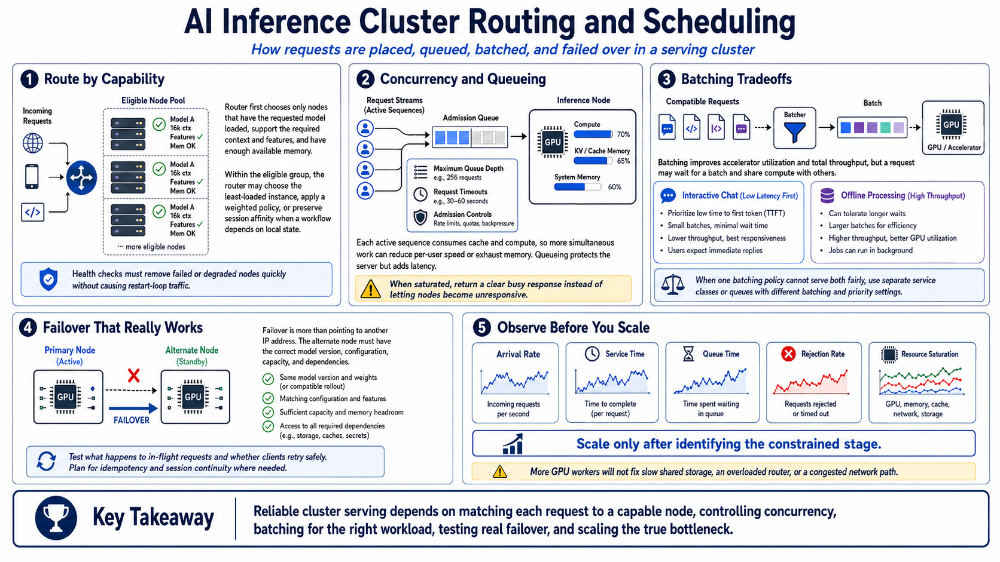

Scheduling, Routing, and Capacity
Connecting to LMS... Progress: in progress

Narration
Routing begins with capability. A request should reach a node that has the requested model loaded, supports the required context and features, and has enough available memory. Within that eligible group, the router may choose the least-loaded instance, follow a weighted policy, or preserve session affinity when a workflow depends on local state. Health checks must remove failed or degraded nodes quickly without sending traffic into a restart loop.
Concurrency describes simultaneous work. Each active sequence consumes cache and compute, so accepting more requests can reduce per-user speed or exhaust memory. Queueing protects the server by holding work until capacity is available, but queue delay contributes directly to latency. Establish maximum queue depth, request timeouts, and admission controls. When the service is saturated, a clear busy response is safer than allowing every node to become unresponsive.
Batching groups compatible work to improve accelerator utilization and total throughput. The tradeoff is that a request may wait for a batch and share compute with others. Interactive chat usually prioritizes low time to first token, while offline processing may accept delay in exchange for higher throughput. Separate service classes or queues when one policy cannot serve both workloads fairly.
Failover is more than pointing at another IP address. The alternate node must have the correct model version, configuration, capacity, and dependencies. Test what happens to in-flight requests and whether clients retry safely. Track arrival rate, service time, queue time, rejection rate, and resource saturation. Scale only after identifying the constrained stage. Adding a GPU worker will not fix a slow shared storage service, an overloaded router, or a network path that cannot carry the traffic.